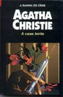

A Casa Torta
Crooked House
Num conhecido subúrbio de Londres, ergue-se uma casa torta, desproporcional e grotesca. Sobre a extravagante família que a habita, parece haver desabado uma maldição: a culpa do envenenamento de seu chefe, o milionário Aristide Leonides. Qual dos parentes o teria assassinado? A própria mulher? Um dos seus filhos? Seus netos? Todos se entreolham desconfiados, enquanto aguardam que o criminoso, um monstro de “alma torta”, volte a se manifestar naquela casa torta... Com estes ingredientes de mistério e uma galeria de personagens inquietantes, Agatha Christie constrói outra de suas histórias marcadas pelo encantamento e o mistério.